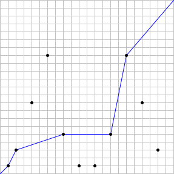

Let $n$ be a positive integer. Suppose there are stations at the coordinates $(x, y) = (2^i \bmod n, 3^i \bmod n)$ for $0 \leq i \leq 2n$. We will consider stations with the same coordinates as the same station.
We wish to form a path from $(0, 0)$ to $(n, n)$ such that the $x$ and $y$ coordinates never decrease.
Let $S(n)$ be the maximum number of stations such a path can pass through.
For example, if $n = 22$, there are $11$ distinct stations, and a valid path can pass through at most $5$ stations. Therefore, $S(22) = 5$. The case is illustrated below, with an example of an optimal path:

It can also be verified that $S(123) = 14$ and $S(10000) = 48$.
Find $\sum S(k^5)$ for $1 \leq k \leq 30$.
solve(max_limit=22) → ?solve(max_limit=6436343) → ?